6 Spojitá náhodná premenná
Doteraz sme hovorili o náhodných premenných, pre ktoré bola množina hodnôt, ktoré nadobúdali, konečná alebo nanajvýš spočitateľná. Existuje veľká skupina situácií, kedy je lepšie uvažovať o náhodnej premennej, ktorá nadobúda nespočitateľne veľa hodnôt, napríklad akékoľvek reálne čislo.
6.1 Funkcia hustoty spojite rozdelenej náhodnej premennej
Popisovať náhodnosť pre tieto premenné si vyžaduje iný prístup. Pre diskrétne náhodné premenné stačilo pravdepodobnosti vymenovať. Teraz to nie je možné, lebo ich je príliš veľa (konkrétne nespočitateľne veľa) a pravdepodobnosť toho, že náhodná premenná bude nadobúdať práve nejakú konkrétnu hodnotu bude 0.
Na popis náhodnosti môžeme stále používať kumulatívnu distribučnú funkciu, ale namiesto pravdepodobnostnej funkcie budeme používať funkciu hustoty (alternatívne funkciu hustoty spojite rozdelenej náhodnej premennej.)
Hovoríme, že spojite rozdelená náhodná premenná \(X\) má funkciu hustoty \(f_X(x),\) kde \(f_X: \mathbb{R} \rightarrow \mathbb{R},\) ak platí:
\[P(a \leq X \leq b) = P(X \in [a,b]) = \int_{a}^b f_X(x) dx\] Nižšie je príklad, ako môže vyzerať funkcia hustoty spojite rozdelenej náhodnej premennej a jej príslušná kumulatívna distribučná funkcia.
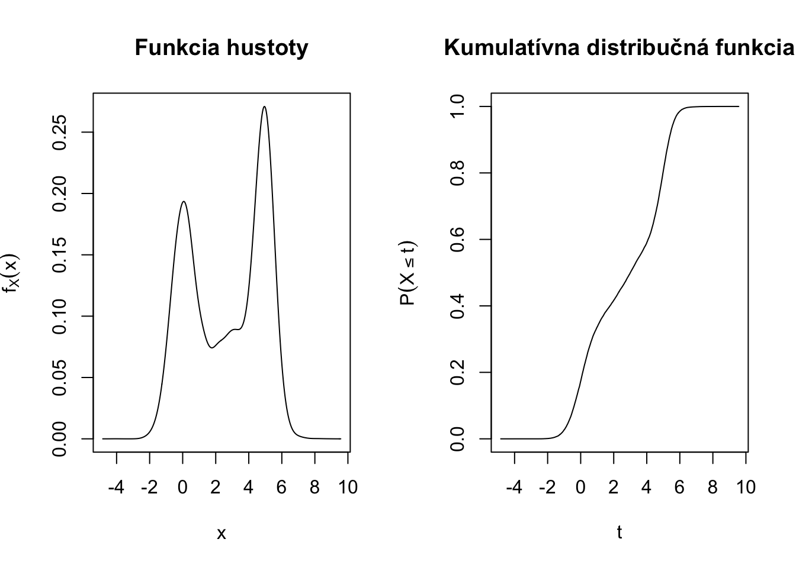
Funkcia hustoty \(f_X\) má rôzne vlastnosti:
\[P(X=a) = P(a \leq X \leq a) = \int_{a}^a f_X(x) dx = 0,\] teda pravdepodobnosť udalosti, že náhodná premenná nadobúda konkrétnu hodnotu \(a\) je nula, a to dokonca pre úplne hocijakú hodnotu \(a \in \mathbb{R}.\)
\(f_X(x) \geq 0\) pre všetky \(x \in \mathbb{R}\) - hustota pravdepodobnosti musí byť všade nezáporná.
\(F_X(t) = \int_{-\infty}^{t} f_X(x) dx\) - hovorí o vzťahu medzi kumulatívnou distribučnou funkciou a funkciou hustoty. Pri spojite rozdelenej náhodnej premennej nemáme problém s derivovaním funkcie \(F_X.\) Pripomeňme, že pri diskrétne rozdelenej náhodnej premennej má funkcia \(F_X\) “skoky” v bodoch \(x\), kde \(p_X(x) > 0\), a teda v týchto bodoch nie je funkcia \(F_X\) spojitá, takže ani diferencovateľná.
\(P(X \in \mathbb{R}) = \int_{-\infty}^{\infty} f_X(x) dx = 1\) - tu ide o analógiu k \(\sum_{x \in \mathcal{S}_X} p_X(x) = 1\) v diskrétnom prípade. Pravdepodobnosť, že náhodná premenná nadobúda nejakú hodnotu, je 1.
\(f_X(x) = \frac{d}{dx} F_X(x)\) - toto vyplýva zo vzťahu medzi deriváciou a integrálom, nazýva sa základná (fundalmentálna) veta integrálneho počtu. Kumulatívna distribučná funkcia \(F_X\) je primitívnou funkciou funkcie hustoty \(f_X.\)
O funkcii hustoty môžeme uvažovať tak, že
\(f(x) \Delta \approx \int_{x}^{x+\Delta}f(s)ds = P(x \leq X \leq x + \Delta) = F_X(x+\Delta) - F_X(x),\) pre nejaké malé číslo \(\Delta.\)
Vo všeobecnosti máme
\[P(X \in A) = \int_{A} f_X(x)dx,\] kde symbol \(\int_{A}\) značí integrovanie cez oblasť \(A.\)
Nasledujúci obrázok ilustruje ako sa vypočíta pravdepodobnosť udalosti, že náhodná premenná padne do intervalu \((0,3),\) teda \(P(X \in [0,3]) = P(0\leq X \leq 3) = \int_{0}^3 f_X(x) dx = F_X(3) - F_X(0)\)
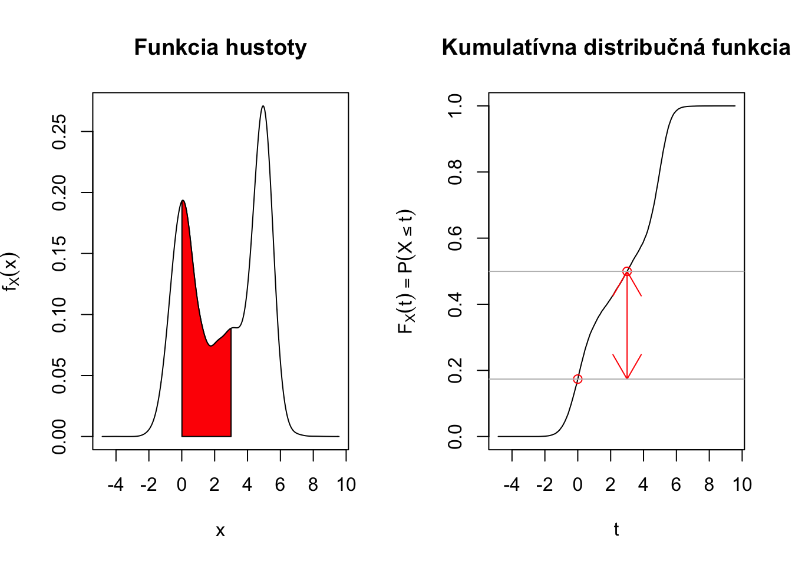
Ďalší obrázok ukazuje \(P(X \in [4,6]) = P(4\leq X \leq 6) = \int_{4}^6 f_X(x) dx = F_X(6) - F_X(4)\) pre inú funkciu hustoty:
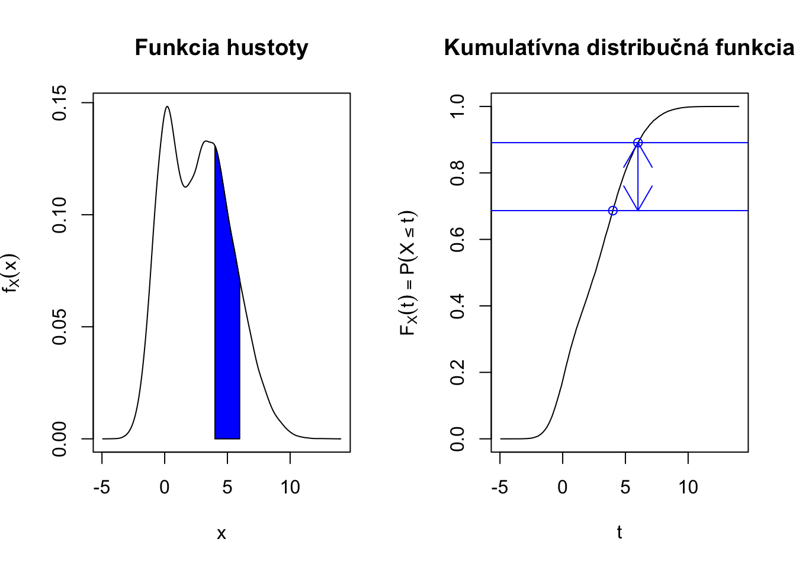
Plocha pod grafom funkcie hustoty, teda integrál funkcie \(f_X\) cez nejaký interval, určuje pravdepodobnosť, že náhodná premenná nadobudne hodnotu v tomto intervale.
Tu je ilustrácia pre nejakú inú funkciu hustoty a \(P(X \in [-1,4]) = P(-1\leq X \leq 4) = \int_{-1}^{4} f_X(x) dx = F_X(4) - F_X(-1)\)
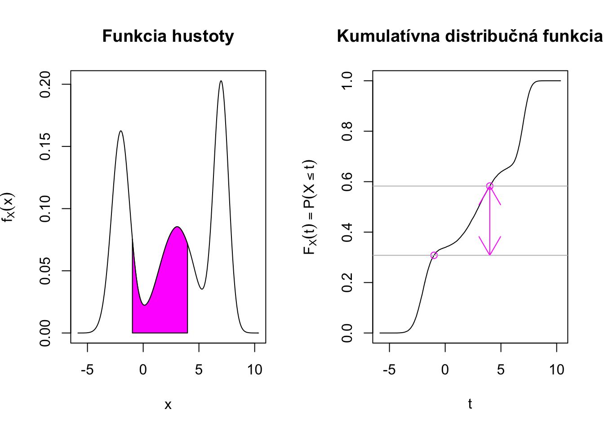
A ďalší obrázok ukazuje inú funkciu hustoty a \(P(X \in [3,9]) = P(3\leq X \leq 9) = \int_{3}^{9} f_X(x) dx = F_X(9) - F_X(3)\)
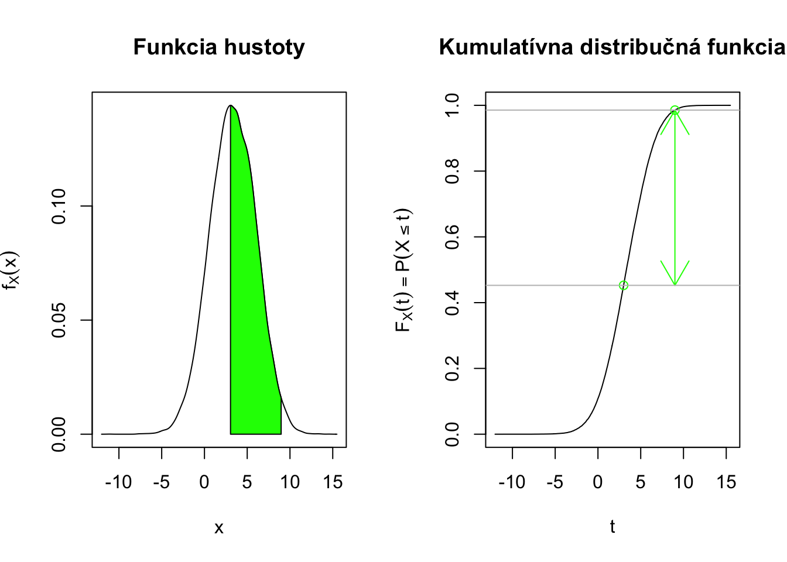
Príklad 6.1 Majme náhodnú premennú \(X\), ktorá má nasledovnú funkciu hustoty: \(f_X(x) = \frac{1}{2}e^{-x/2}\) pre \(x > 0\), inak \(f_X(x)=0\). Vypočítajte \(P(1 \leq X \leq 2).\)
\[\begin{eqnarray*} P(1 \leq X \leq 2) &=& \int_{1}^{2} f_X(x)dx = \int_{1}^{2} \frac{1}{2}e^{-x/2} dx \\ &=& [-e^{-x/2}]_{1}^{2} = [-e^{-2/2}] - [-e^{-1/2}]\\ &=& e^{-1/2} - e^{-1} \approx 23.87\%. \end{eqnarray*}\]
Situácia je ilustrovaná nižšie:
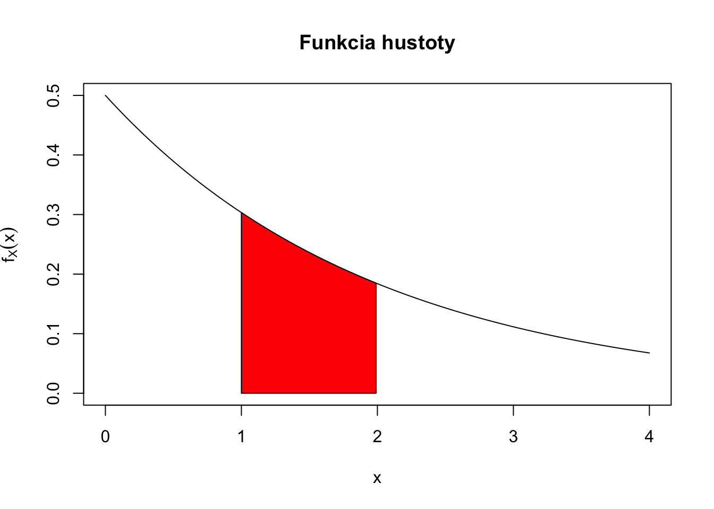
Príklad 6.2 Uvažujme náhodnú premennú \(X\), ktorá modeluje IQ náhodne vybraného človeka z danej populácie. Táto náhodná premenná má nasledovnú funkciu hustoty \(f_X(x) = \frac{1}{15\sqrt{2 \pi}} e^{-\frac{1}{2}\frac{(x-100)^2}{15^2}}\). Vypočítajte pravdepodobnosť, že náhodne vybraný človek z tejto populácie bude mať IQ väčšie ako 130.
\[\begin{eqnarray*} P(X > 130) &=& 1-P(X \leq 130) = 1 - \int_{-\infty}^{130} f_X(x)dx = 1 - \int_{-\infty}^{130} \frac{1}{15\sqrt{2 \pi}} e^{-\frac{1}{2}\frac{(x-100)^2}{15^2}} dx \\ &=& \cdots \approx 1 - 0.9772 = 2.28\%. \end{eqnarray*}\]
Tento integrál nemá analytické (“pekné”) riešenie a treba ho zrátať numericky pomocou počítačového programu.
Nasledujúci obrázok túto situáciu ilustruje
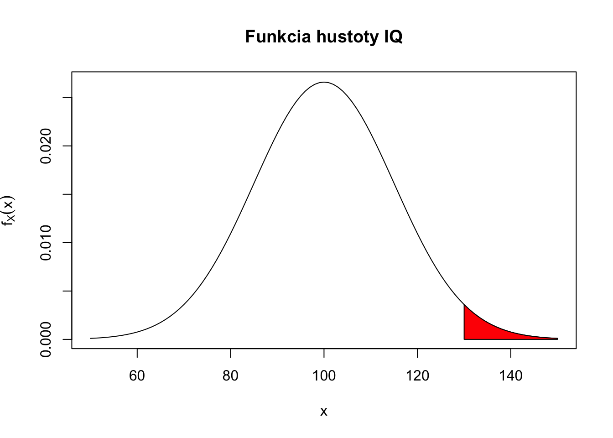
6.2 Charakteristiky spojitých náhodných premenných
Stredná hodnota spojite rozdelenej náhodnej premennej je
\[\text{E}[X] = \int_{-\infty}^{\infty} x f_X(x) dx,\] ak \(\int_{-\infty}^{\infty} |x| f_X(x) dx < \infty.\) Teda ide o hodnoty \(x\) váhované hustotou pravdepodobnosti \(f_X(x).\)
Nasledujúci obrázok ukazuje stredné hodnoty pre náhodné premenné s rôznymi funkciami hustoty:
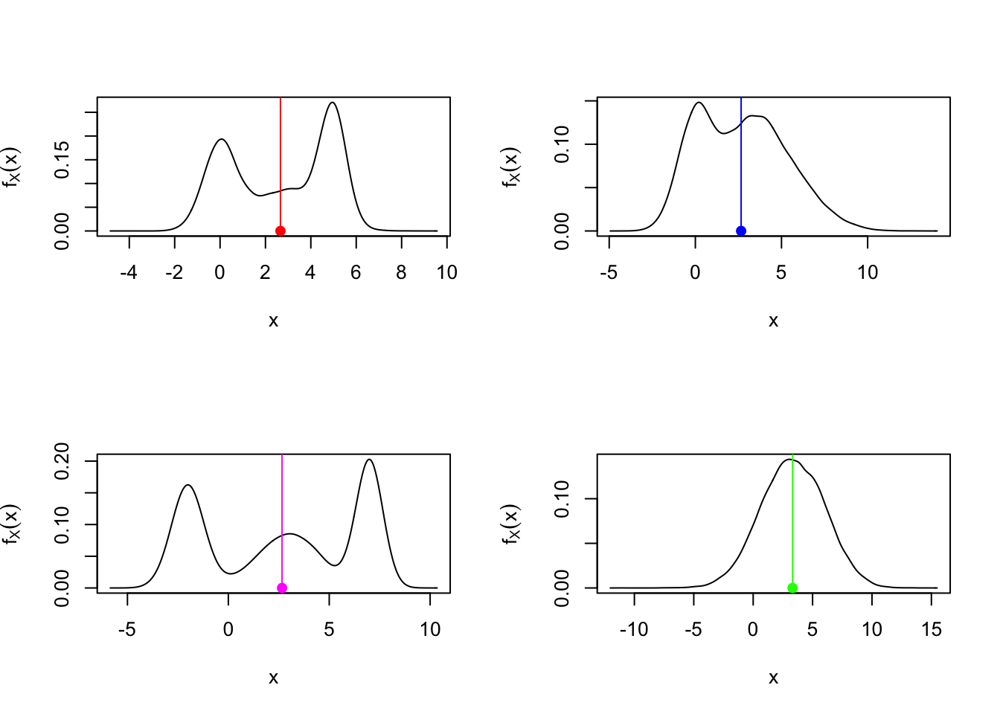
Stredná hodnota má aj pre spojite rozdelenú náhodnú premennú interpretáciu ťažiska. Ak by sme si predstavili funkciu hustoty ako tenký kovový plát, tak stredná hodnota je miesto, v ktorom by sme museli tento plát podoprieť tak, aby bol v rovnováhe.
Pri počítaní stredných hodnôt ale aj pri počítaní pravdepodobností si budeme musieť spomenúť ako sa integruje. Existuje konečný počet trikov, ktoré sú postačujúce na vypočítanie veľkej väčšiny intergrálov, s ktorými sa stretnete v rámci pravdepodobnosti a štatistiky:
- nájdenie primitívnej funkcie
- integrovanie per partes
- substitúcia
Iné techniky, ako napríklad využitie trigonimetrických identít alebo rozklad na čiastočné zlomky, sa pre naše potreby budú využívať len zriedka, až vôbec.
Príklad 6.3 Majme náhodnú premennú \(X\), ktorá má nasledovnú funkciu hustoty \(f_X(x) = \frac{1}{2}e^{-x/2}\) pre \(x > 0\) inak \(f_X(x)=0\). Vypočítajte \(\text{E}[X].\)
\[\begin{eqnarray*} \text{E}[X] &=&\int_{-\infty}^{\infty} x f_X(x) dx = \int_{0}^{\infty} x \frac{1}{2}e^{-x/2} dx \\ &=& \left[x . \left(-e^{-\frac{x}{2}} \right)\right]^{\infty}_0 - \int_{0}^{\infty} 1 . \left(-e^{-\frac{x}{2}} \right) dx\\ &=& 0 - 0 - \left[2 e^{-\frac{x}{2}} \right]^{\infty}_{0} = 0 - \left(-2\right) = 2. \end{eqnarray*}\]
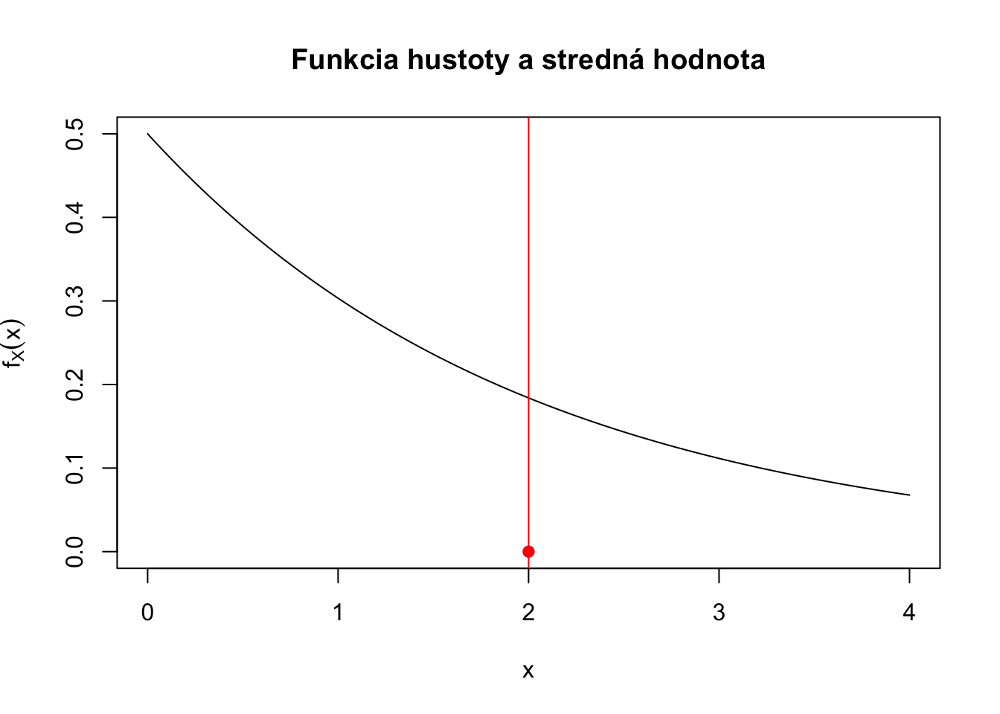
Stredná hodnota stransformovanej náhodnej premennej \(g(X),\) kde \(g: \mathbb{R} \rightarrow \mathbb{R}\), je
\[\text{E}[g(X)] = \int_{-\infty}^{\infty} g(x) f_X(x) dx.\] Poznamenajme, že aj pre spojitú náhodnú premennú platí \(\text{E}[aX + bY] = a\text{E}[X]+ b\text{E}[Y],\) teda stredná hodnota je lineárny operátor.
Variancia hodnota spojite rozdelenej náhodnej premennej je
\[\text{Var}[X] = \text{E}[(X-\text{E}[X])^2] = \int_{-\infty}^{\infty} (x - \text{E}(X))^2 f_X(x) dx,\] ak \(\int_{-\infty}^{\infty} |x^2| f_X(x) dx < \infty.\) Aj pre spojite rozdelenú náhodnú premennú platí \(\text{Var}[X] = \text{E}[X^2] - (\text{E}[X])^2.\)
Príklad 6.4 Majme náhodnú premennú \(X\), ktorá má nasledovnú funkciu hustoty \(f_X(x) = \frac{1}{2}e^{-x/2}\) pre \(x > 0\), inak \(f_X(x)=0\). Vypočítajte \(\text{Var}[X].\)
\[\begin{eqnarray*} \text{E}[X] &=& \dots [\text{ukázali sme vyššie}] \dots = 2 \\ \text{E}[X^2] &=& \dots [\text{dva krát per partes}] \dots = 8 \\ \text{Var}[X] &=& \text{E}[X^2] - \left(\text{E}[X]\right)^2 = 8 - 2^2 = 4 \end{eqnarray*}\]
Medián spojite rozdelenej náhodnej premennej \(X\) je taká hodnota \(M\), pre ktorú platí
\[P(X \leq M)= P(X \geq M) = 0.5.\] Medián je taká hodnota, že napravo aj naľavo od nej je 50% pravdepodobnostnej masy. Ľudia sa často čudujú, keď v médiách zaznie informácia o priemernej mzde v hospodárstve. Zdá sa im priveľká. Mnoho ľudí totiž intuitívne stotožňuje priemer s mediánom, tieto hodnoty však môžu byť výrazne iné, najmä pri rozdeleniach, ktoré sú typické pre mzdy. Na nasledujúcom obrázku je taká naklonená funkcia hustoty (nech sú to mesačné mzdy v tisísoch eur). Kým medián (prerušovaná čiara) je \(1\), tak stredná hodnota (plná čiara) je približne \(1.65\). Takže priemerná mzda v tomto hospodárstve je 1650eur ale len polovica ľudí má plat aspoň 1000eur. Preto informácia v televíznych správach o priemernej mzde sa môže zdať mnohým ľuďom privysoká.

Príklad 6.5 Majme náhodnú premennú \(X\), ktorá má nasledovnú funkciu hustoty \(f_X(x) = \frac{1}{2}e^{-x/2}\) pre \(x > 0\), inak \(f_X(x)=0\). Vypočítajte jej medián.
Vieme, že kumulatívna distribučná funkcia vyzerá nasledovne \[\begin{equation*} F_X(t)= \begin{cases} 0, & \text{ak}\ t < 0, \\ 1-e^{-t/2}, & \text{ak}\ t \geq 0. \end{cases} \end{equation*}\]
Preto medián je hodnota \(M\), ktoré rieši nasledovnú rovnicu
\[F_X(M) = 1-e^{-M/2} = 0.5,\]
preto \(M = 2\log(2).\)
\[\\[0.7in]\]
Existujú rôzne špecifické typy spojite rozdelených náhodných premenných
- rovnomerné rozdelenie na intervale \((a,b),\)
- normálne rozdelenie,
- exponenciálne rozdelenie,
- t-rozdelenie,
- chí-kvadrát rozdelenie,
a mnoho mnoho iných.
6.3 Rovnomerné rozdelenie
Hovoríme, že spojitá náhodná premenná \(X\) má rovnomerné rozdelenie na intervale \([a,b]\), ak má nasledovnú funkciu hustoty:
\[\begin{equation*} f_X(x)= \begin{cases} \frac{1}{b-a}, & \text{ak}\ x \in [a,b], \\ 0. & \text{inak} \end{cases} \end{equation*}\]
Tomu zodpovedá kumulatívna distribučná funkcia:
\[\begin{equation*} F_X(t)= \begin{cases} 0, & \text{ak}\ t < a, \\ \frac{t-a}{b-a}, & \text{ak}\ t \in [a,b], \\ 1, & \text{ak} \ t > b. \end{cases} \end{equation*}\]
Takúto náhodnú premennú označujeme ako \(X \sim \text{Unif}[a,b],\)
Toto rozdelenie je vhodné, keď vyberáme rovnomerne náhodne číslo z intervalu. Rovnomerne znamená, že pravdepodobnosť, že náhodná premenná nadobudne hodnotu v dvoch intervaloch rovnakej dĺžky, je rovnaká. Teda nijakým spôsobom neuprednostňujeme žiadne hodnoty pred inými.
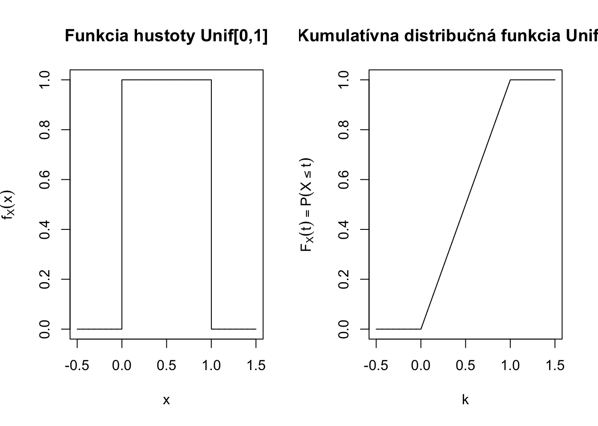
Stredná hodnota a variancia pre takúto náhodnú premennú sú \[\begin{eqnarray*} \text{E}[X] &=& \int_{-\infty}^{\infty}x f_X(x) dx = \int_{a}^{b}x \frac{1}{b-a} dx\\ &=& \left[\frac{x^2}{2(b-a)}\right]_a^b = \frac{b+a}{2},\\ \text{Var}[X] &=& \cdots = \frac{1}{12}(b-a)^2. \end{eqnarray*}\]
Nasledujúci obrázok porovnáva rovnomerne rozdelené náhodné premenné pre rôzne intervaly.
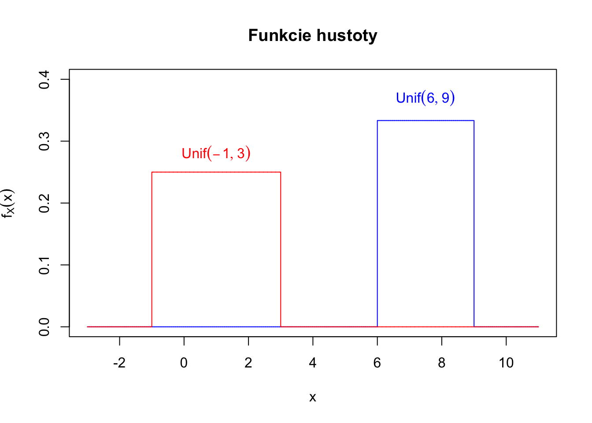
6.4 Normálne rozdelenie
Hovoríme, že spojitá náhodná premenná \(X\) má normálne rozdelenie s parametrami \(\mu\) a \(\sigma^2\), ak má nasledovnú funkciu hustoty:
\[\begin{equation*} f_X(x)=\frac{1}{\sigma \sqrt{2\pi}}e^{-\frac{1}{2}\frac{(x-\mu)^2}{\sigma^2}} \end{equation*}\]
Tomu zodpovedá kumulatívna distribučná funkcia:
\[\begin{equation*} F_X(t)= \int_{-\infty}^{t}\frac{1}{\sigma \sqrt{2\pi}}e^{-\frac{1}{2}\frac{(x-\mu)^2}{\sigma^2}}dx. \end{equation*}\]
Takúto náhodnú premennú označujeme ako \(X \sim \text{N}(\mu,\sigma^2).\)
Kumulatívna distribučná funkcia normálneho rozdelnia nemá pekné analytické riešenie. Pre špeciálny prípad, keď \(\mu=0\) a \(\sigma=1,\) teda pre \(\text{N}(0,1)\), rezervujeme pre funkciu hustoty aj pre kumulatívnu distribučnú funkciu špeciálne symboly:
\[\phi(x) \equiv \frac{1}{\sqrt{2\pi}}e^{-\frac{x^2}{2}},\] \[\Phi(t) \equiv \int_{-\infty}^{t}\phi(x)dx = \int_{-\infty}^{t}\frac{1}{ \sqrt{2\pi}}e^{-\frac{x^2}{2}}dx = \int_{-\infty}^{t}\frac{1}{1 \sqrt{2\pi}}e^{-\frac{1}{2}\frac{(x-0)^2}{1^2}}dx. \] Rozdelenie \(\text{N}(0,1)\) nazývame normované normálne rozdelenie alebo aj štandardizované normálne rozdelenie.
Normálne (Gaussovské) rozdelenie je jedno z najdôležitejších pravdepodobnostných rozdelení v štatistike. Tvar jeho hustoty pravdepodobnosti je známy Gaussovský zvon. Jeho dôležitosť plynie najmä z toho, že je to limitné rozdelenie pre aritmetický priemer pre nezávislé a rovnako rozdelené pozorovania zo (skoro) hocijakej distribúcie. O tomto výsledku sa budeme rozprávať ešte veľa, nazýva sa Centrálna limitná veta, ale o tomto až neskôr. Prekvapivo rôzne veci v prírode alebo v spoločnosti sa správajú ako normálne rozdelenie, alebo aspoň podobne ako normálne rozdelenie.
- IQ v populácii,
- Krvný tlak v populácii,
- Rôzne biologické merania - dĺžky, povrchy, objemy,
- Chyby merania pri fyzikálnych experimentoch,
- Výsledky maturitných testov,
- Nárast hodnoty akcií na burze cenných papierov,
- Ak zahrievate tyč v jednom bode, tak teplota v nejakom čase bude vyzerať ako toto rozdelenie. Toto je riešenie diferenciálnej rovnice, ktorá sa nazýva rovnica vedenia tepla,
- čokoľvek sa správa ako difúzia, napríklad pohyb plynu v priestore - ako ďaleko môže antilopa zacítiť šelmu (viacrozmerné normálne rozdelenie).
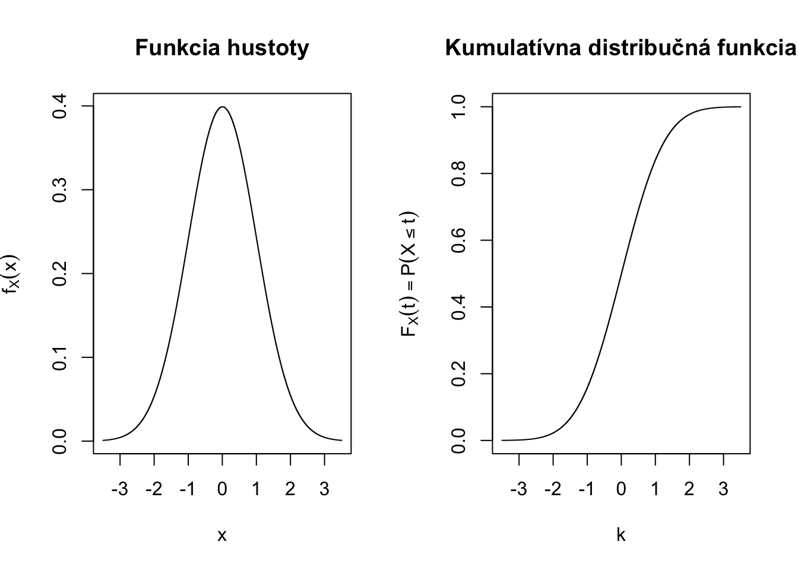
Stredná hodnota a variancia pre takúto náhodnú premennú sú \[\begin{eqnarray*} \text{E}[X] &=& \cdots = \mu,\\ \text{Var}[X] &=& \cdots = \sigma^2. \end{eqnarray*}\]
Nasledujúci obrázok porovnáva Normálne rozdelené náhodné premenné pre rôzne parametre.
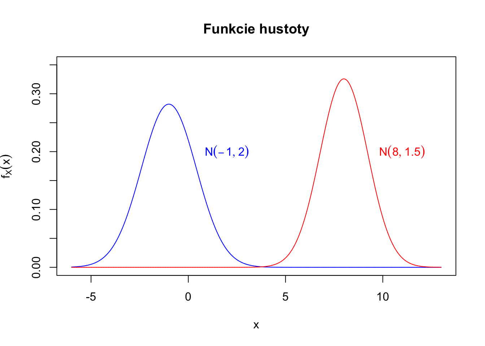
Normálne rozdelenie má rôzne vlastnosti, vďaka ktorým sa s ním dobre pracuje, napríklad:
- Ak je \(X \sim \text{N}(\mu,\sigma^2)\), potom platí, že \(aX + b \sim N(a\mu + b, a^2 \sigma^2).\) Teda lineárna transformácia normálne rozdelenej náhodnej premennej je stále normálne rozdelená,
- Ak \(X_1 \sim \text{N}(\mu_1,\sigma_1^2)\) a \(X_2 \sim \text{N}(\mu_2,\sigma_2^2)\) a sú nezávislé, potom je \(aX_1+bX_2 \sim \text{N}(a\mu_1 + b\mu_2,a^2\sigma_1^2 + b^2\sigma_2^2).\)
6.5 Exponenciálne rozdelenie
Hovoríme, že spojitá náhodná premenná \(X\) má exponenciálne rozdelenie s parametrom \(\lambda\), ak má nasledovnú funkciu hustoty:
\[\begin{equation*} f_X(x)= \begin{cases} \lambda e^{-\lambda x}, & \text{ak}\ x > 0, \\ 0. & \text{inak} \end{cases} \end{equation*}\]
Tomu zodpovedá nasledovná kumulatívna distribučná funkcia:
\[\begin{equation*} F_X(t)= \begin{cases} 0, & \text{ak}\ t < 0, \\ 1-e^{-\lambda t}, & \text{ak}\ t \geq 0, \end{cases} \end{equation*}\]
Takúto náhodnú premennú označujeme ako \(X \sim \text{Exp}(\lambda),\) a má jeden parameter, \(\lambda\).
Toto rozdelenie modeluje napríklad
- čas dokým nenastane nejaká situácia/udalosť (príde zákazník, zaplava, zemetrasenie),
- čas rozpadu rádioaktívnych častíc,
- doba obslúženia zákazníka,
- čas medzi udalosťami, ktorých počet je modelovaný Poissonovým rozdelením.
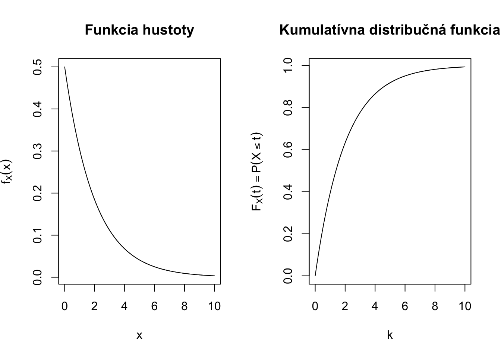
Stredná hodnota a variancia pre takúto náhodnú premennú sú \[\begin{eqnarray*} \text{E}[X] &=&\int_{-\infty}^{\infty} x f_X(x) dx = \int_{0}^{\infty} x \lambda e^{-\lambda x} dx \\ &=& \left[x . \left(-e^{-\lambda x} \right)\right]^{\infty}_0 - \int_{0}^{\infty} 1 . \left(-e^{-\lambda x} \right) dx\\ &=& 0 - 0 - \left[\frac{1}{\lambda} e^{-\lambda x} \right]^{\infty}_{0} = 0 - \left(-\frac{1}{\lambda}\right) = \frac{1}{\lambda},\\ \text{Var}[X] &=& \cdots = \frac{1}{\lambda^2}. \end{eqnarray*}\]
Tu je porovnanie exponenciálne rozdelených náhodných premenných pre rôzne parametre \(\lambda = 3\) (modrou farbou) a \(\lambda = 6\) (červenou farbou).
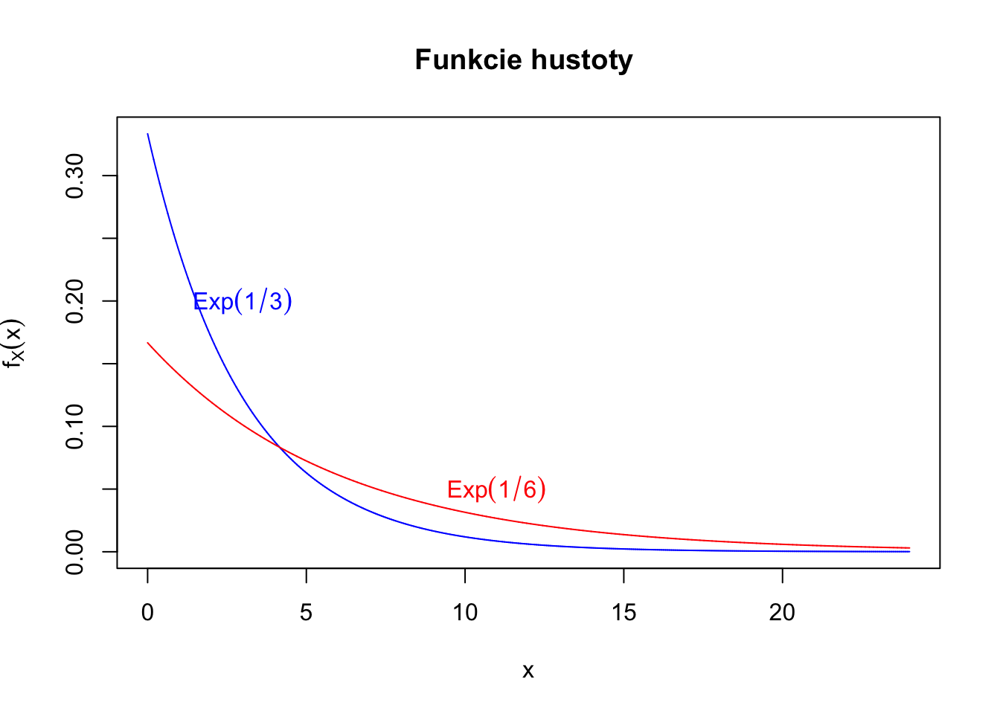
Exponenciálne rozdelenie má jednu dôležitú vlastnosť a to, že si nepamätá. Majme žiarovku, ktorej životnosť (označená ako \(W\)) je modelovaná exponenciálnym rozdelením s parametrom \(\lambda\). Napríklad ak priemerná životnosť je 1000 hodín, tak \(\lambda = 1/1000.\) Vieme, že žiarovka už funguje 500 hodín (nech je toto \(a\)). Aké je pravdepodobnostné rozdelenie jej ďalšej životnosti?
\[\begin{eqnarray*} P(W > t + a | W > a) &=& \frac{P(W > t + a \cap W > a)}{P(W > a)} = \frac{P(W > t + a)}{P(W > a)} \\ &=& \frac{e^{-\lambda (t+a)}}{ e^{-\lambda a}} \\ &=& e^{-\lambda t} = P(W > t). \end{eqnarray*}\]
Používaná žiarovka je rovnako dobrá ako nová (!). A je úplne jedno, ako dlho už funguje. Exponenciálne rozdelenie preto dobre modeluje čas medzi udalosťami, ktoré nastanú zrazu , alebo životnosť objektov, ktoré nestarnú. Dá sa dokonca ukázať, že toto je jediné rozdelenie, ktoré má takúto vlastnosť. Pre modelovanie životnosti vecí, ktorých šanca zlyhania v čase rastie alebo klesá, sa používa nejaké bohatšie rozdelenie, napríklad Weibullovo.
6.6 Chí-kvadrát rozdelenie
Hovoríme, že spojitá náhodná premenná \(X\) má chí-kvadrát rozdelenie s \(k\) stupňami voľnosti, ak má nasledovnú funkciu hustoty:
\[f_X(x) = \frac{1}{2^{k/2}\Gamma(k/2)}x^{k/2-1}e^{-x/2}.\] Distribučná funkcia, podobne ako pre normálne rozdelenie, nemá peknú analytickú formulu. Pri práci s ňou sa spoliehame na softvér.
Takúto náhodnú premennú označujeme ako \(X \sim \chi^2_n\) a toto rozdelenie popisuje pravdepodobnostné správanie
\[X_1^2 + X_2^2 + \dots + X_k^2\] kde \(X_i \sim \text{N}(0,1)\) a zároveň sú \(\{X_i\}_{i=1}^{k}\) nezávislé náhodné premenné.
Rozdelenie \(\chi^2_k\) je užitočné pri štatistickom testovaní hypotéz. Konkrétne odhad variancie bude viesť na štatistiku, ktorá bude po vhodnej transformácii rozdelená ako \(\chi^2_k.\)
Stredná hodnota a variancia pre takúto náhodnú premennú sú \[\begin{eqnarray*} \text{E}[X] &=& \text{E}[X_1^2] + \text{E}[X_2^2] + \dots + \text{E}[X_k^2] = 1 + 1 + \cdots + 1 = k,\\ \text{Var}[X] &=& \cdots = 2k. \end{eqnarray*}\]
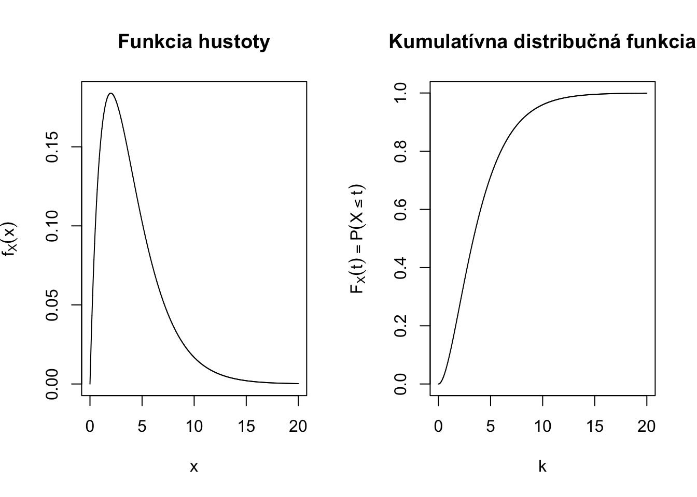
Tu je porovnanie \(\chi^2\) rozdelení náhodných premenných pre rôzne parametre \(k=3,6\):
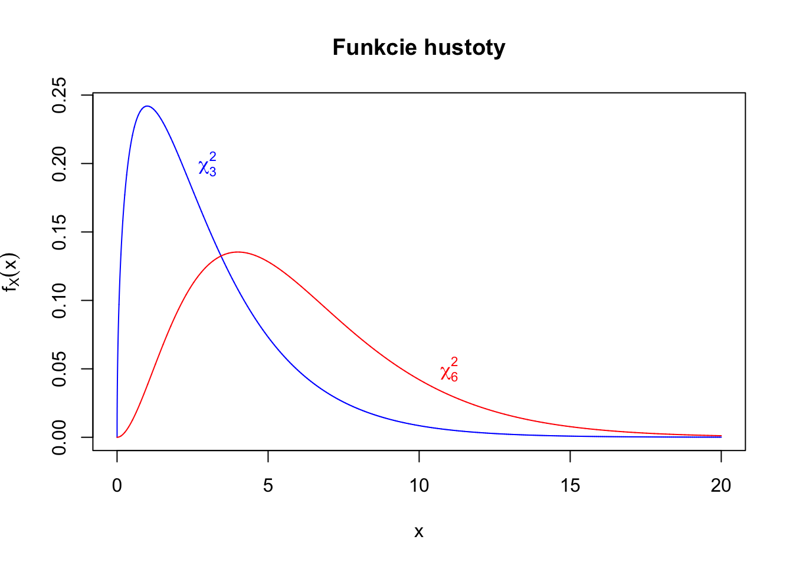
6.7 Studentovo rozdelenie (t-rozdelenie)
Hovoríme, že spojitá náhodná premenná \(X\) má Studentovo rozdelenie s \(k\) stupňami voľnosti, ak má nasledovnú funkciu hustoty:
\[f_X(x) = \frac{\Gamma\left(\frac{k+1}{2} \right)}{\sqrt{k \pi} \ \Gamma\left(\frac{k}{2} \right)} \left(1 + \frac{x^2}{k} \right)^{\frac{k+1}{2}}.\] Predpis kumulatívnej distribučnej funkcie je tiež komplikovaný a nie je užitočné si ho pamätať.
Takúto náhodnú premennú označujeme ako \(X \sim T_k.\)
Studentove t-rozdelenie bude užitočné pri testovaní štatistických hypotéz, napríklad keď chceme porovnať, či majú dva súbory pozorovaní z nejakých náhodných premenných rovnakú strednú hodnotu. Uvažujme \(Z \sim N(0,1)\) a \(V \sim \chi^2_k\), ktoré sú nezávislé. Potom \(T\)
\[T = \frac{Z}{\sqrt{\frac{V}{k}}}\] má Studentovo t-rozdelenie s \(k\) stupňami voľnosti.
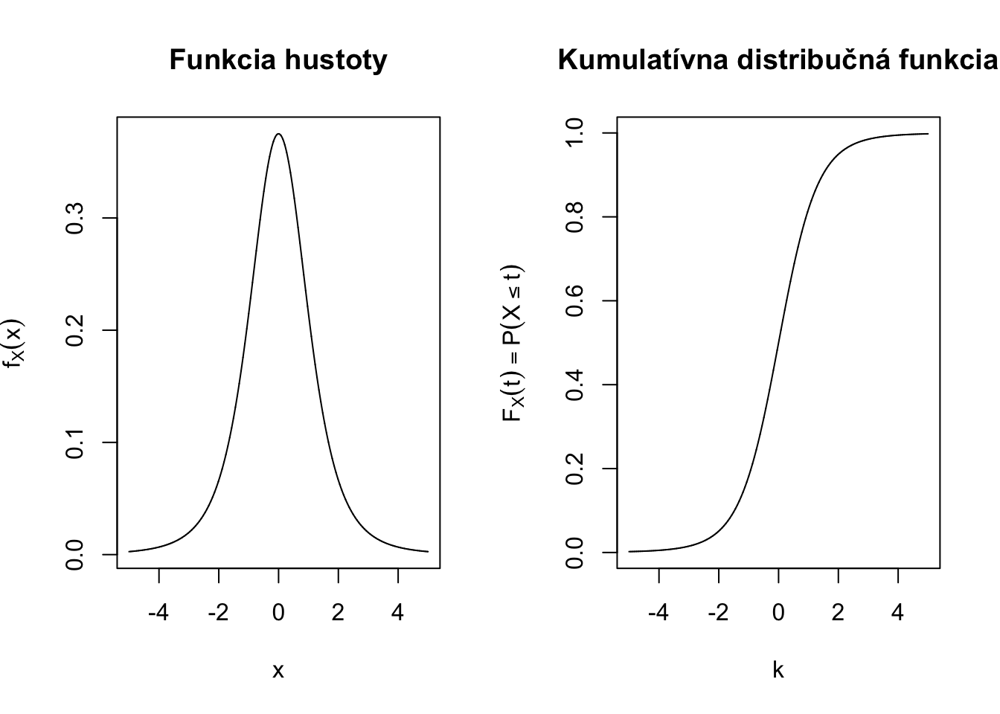
Stredná hodnota (pre \(k>1\)) a variancia (pre \(k>2\)) pre takúto náhodnú premennú sú \[\begin{eqnarray*} \text{E}[X] &=& 0,\\ \text{Var}[X] &=& \cdots = \frac{k}{k-2}. \end{eqnarray*}\]
Nasledujúci obrázok porovnáva t-rozdelené náhodné premenné pre rôzne parametre \(k=1,2,6,12\) a limitné rozdelenie pre \(k \rightarrow \infty\), teda \(\text{N}(0,1)\).
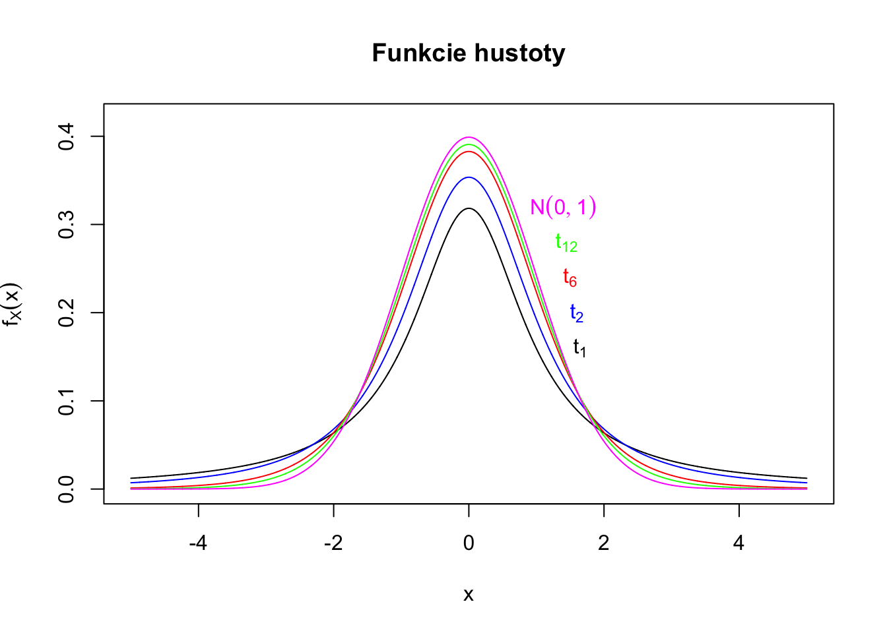
Rozdelenie \(t_1\) má špeciálne meno. Nazýva sa Cauchyho rozdelenie a je zaujímavé tým, že \(\text{E}[X]\) neexistuje, lebo nie je splnená podmienka \(\int_{-\infty}^{\infty}|x|f_X(x)dx < \infty\). O takomto rozdelení hovoríme, že má ťažké chvosty, lebo pravdepodobnosť veľkej alebo malej hodnoty x síce ide k nule, ale príliš pomaly na to, aby bol integrál hodnôt váhovaných pravdepodobnosťami konečný.
6.8 Cvičenia
Cvičenie 6.1 Majme náhodnú premennú s nasledovnou kumulatívnou distribučnou funkciou:
\[\begin{equation*} F_X(x)= \begin{cases} 0, & \text{ak}\ x \leq 0, \\ \frac{x^2}{9}, & \text{ak}\ x \in (0,3], \\ 1, & \text{ak} \ x > 3. \end{cases} \end{equation*}\]
Nájdite a načrtnite jej funkciu hustoty pravdepodobnosti.
Vypočítajte jej strednú hodnotu a medián.
Cvičenie 6.2 Majme náhodnú premennú s nasledovnou kumulatívnou distribučnou funkciou:
\[\begin{equation*} F_X(x)= \begin{cases} 0, & \text{ak}\ x \leq 0, \\ \sin(2x), & \text{ak}\ x \in \left(0,\frac{\pi}{4}\right), \\ 1, & \text{ak} \ x > \frac{\pi}{4}. \end{cases} \end{equation*}\]
Nájdite a načrtnite jej funkciu hustoty pravdepodobnosti.
Vypočítajte jej strednú hodnotu a medián.
Cvičenie 6.3 Majme náhodnú premennú s nasledovnou funkciu hustoty pravdepodobnosti:
\[\begin{equation*} f_X(x)= \begin{cases} 2x, & \text{ak}\ x \in [0,1], \\ 0, & \text{inak}. \end{cases} \end{equation*}\]
Skontrolujte, že táto \(f_X\) je korektná funkcia hustoty.
Nájdite a načrtnite jej kumulatívnu distribučnú funkciu.
Cvičenie 6.4 Majme náhodnú premennú s nasledovnou funkciu hustoty pravdepodobnosti:
\[\begin{equation*} f_X(x)= \begin{cases} \frac{1}{3}, & \text{ak}\ x \in [0,1], \\ \frac{2}{3}, & \text{ak}\ x \in (1,2], \\ 0, & \text{inak}. \end{cases} \end{equation*}\]
Skontrolujte, že táto \(f_X\) je korektná funkcia hustoty.
Nájdite a načrtnite jej kumulatívnu distribučnú funkciu.
Vypočítajte jej strednú hodnotu, varianciu a medián.
Cvičenie 6.5 Majme náhodnú premennú s nasledovnou funkciu hustoty pravdepodobnosti:
\[\begin{equation*} f_X(x)= \begin{cases} 0, & \text{ak}\ x \leq 0, \\ a \sin x, & \text{ak}\ x \in (0,\pi], \\ 0, & \text{ak}\ x>\pi. \end{cases} \end{equation*}\]
Vypočítajte \(a\) tak, aby \(f_X\) bola korektná funkcia hustoty.
Nájdite a načrtnite jej kumulatívnu distribučnú funkciu.
Vypočítajte jej strednú hodnotu, varianciu a \(P(X \geq \pi/4)\)
Cvičenie 6.6 Majme náhodnú premennú s nasledovnou funkciu hustoty pravdepodobnosti:
\[f_X(x) = \frac{4c}{e^x + e^{-x}}\]
Vypočítajte \(c\) tak, aby \(f_X\) bola korektná funkcia hustoty.
Nájdite a načrtnite jej kumulatívnu distribučnú funkciu.
Vypočítajte jej strednú hodnotu, varianciu, medián a \(P(X \geq 1).\)
Cvičenie 6.7 Majme náhodnú premennú s nasledovnou funkciu hustoty pravdepodobnosti:
\[\begin{equation*} f_X(x)= \begin{cases} x - \frac{x^3}{4}, & \text{ak}\ x \in (0,2), \\ 0, & \text{inak}. \end{cases} \end{equation*}\]
Nájdite a načrtnite jej kumulatívnu distribučnú funkciu.
Vypočítajte jej strednú hodnotu, varianciu, medián a \(P(|X-1| \leq 0.5)\)
Cvičenie 6.8 Nech \(X \sim \text{Unif}[4,6]\)
Nájdite kumulatívnu distribučnú funkciu náhodnej premennej \(X\).
Nájdite kumulatívnu distribučnú funkciu náhodnej premennej \(X^2\).
Cvičenie 6.9 Využitím linearity strednej hodnoty ukážte, že platí
\[\text{Var}[aX+b] = a^2 \text{Var}[X].\]
Cvičenie 6.10 Majme náhodnú premennú s nasledovnou funkciu hustoty pravdepodobnosti:
\[\begin{equation*} f_X(x)= \begin{cases} c.e^{-x}, & \text{ak}\ x > 0, \\ 0, & \text{inak}. \end{cases} \end{equation*}\]
Určite konštantu \(c\).
Cvičenie 6.11 Ukážte, že neexistuje žiadna náhodná premenná, pre ktorú platí \(\text{E}[X] = 4\) a súčasne \(\text{E}[X^2]=15.\)
Cvičenie 6.12 Nech \(X \sim \text{N}(0,1)\) a \(Y \sim \text{N}(1,1)\)
Ukážte, že \(P(X<3) > P(Y<3).\)
Cvičenie 6.13 Ukážte, že nasledujúce funkcie hustoty sú korektné
- (Weibullovo rozdelenie)
\[\begin{equation*} f_X(x)= \begin{cases} \alpha x^{\alpha-1}e^{-x^{\alpha}}, & \text{ak}\ x >0, \\ 0, & \text{inak} \end{cases} \end{equation*}\] pre \(\alpha > 0,\)
- (Pareto rozdelenie)
\[\begin{equation*} f_X(x)= \begin{cases} \alpha(1+x)^{-\alpha-1}, & \text{ak}\ x >0, \\ 0, & \text{inak} \end{cases} \end{equation*}\] pre \(\alpha > 0,\)
- (Cauchyho rozdelenie)
\[f_X(x) = \frac{1}{\pi} \frac{1}{1+x^2},\] (pomôcka, pozrite sa do tabuliek derivácie pre \(\text{arctan}\).)
- (Laplaceho rozdelenie)
\[f_X(x) =e^{-|x|}/2,\]
- (Extreme value rozdelenie)
\[f_X(x) =e^{-x}\text{exp}\{-e^{-x}\}.\]
Cvičenie 6.14 Majme náhodnú premennú s takouto funkciou hustoty
\[\begin{equation*} f_X(x)= \begin{cases} c x^2, & \text{ak}\ |x| < 1, \\ 0, & \text{inak}. \end{cases} \end{equation*}\]
- Nájdite konštantu \(c\).
- Vypočítajte \(\text{E}[X]\) a \(\text{Var}[X].\)
- Vypočítajte \(P\left(X \geq \frac{1}{2}\right)\)
Cvičenie 6.15 Majme náhodnú premennú s takouto funkciou hustoty
\[ f_X(x)=\frac{1}{2} e^{-|x|}.\] Vypočítajte kumulatívnu distribučnú funkciu pre \(Y = X^2.\)
Cvičenie 6.16 Majme náhodnú premennú s takouto funkciou hustoty
\[\begin{equation*} f_X(x)= \begin{cases} 4 x^3, & \text{ak}\ 0 < x < 1, \\ 0, & \text{inak}. \end{cases} \end{equation*}\]
- Vypočítajte \(P\left(X \geq \frac{2}{3}| X > \frac{1}{3}\right).\)
Cvičenie 6.17 Majme náhodnú premennú s takouto funkciou hustoty
\[\begin{equation*} f_X(x)= \begin{cases} x^2 \left( 2x + \frac{3}{2}\right), & \text{ak}\ 0 < x \leq 1, \\ 0, & \text{inak}. \end{cases} \end{equation*}\]
- Vypočítajte \(\text{Var}[Y]\) pre \(Y = \frac{2}{X} + 3.\)
Cvičenie 6.18 Majme kladnú spojitú náhodnú premennú. Ukážte, že platí
\[\text{E}[X] = \int_{0}^{\infty}P(X \geq x) dx.\]
Cvičenie 6.19 Nech \(f_{X_1}\) a \(f_{X_2}\) sú hustoty pravdepodobnosti náhodných premenných \(X_1\) a \(X_2.\) Rozhodnite, či môže platiť \(f_{X_1}(x) > f_{X_2}(x)\) pre všetky \(x \in \mathbb{R}.\)
Cvičenie 6.20 Životnosť súčiastky je exponenciálne rozdelená so strednou hodnotou 1 rok. Aká je pravdepodobnosť, že ak funguje už 2 roky, že bude fungovať dalšie 3 roky?
Cvičenie 6.21 Na náš web príde človek približne každých 10min. Aká je šanca, ze počas polhodinového výpadku nikto nechcel navštíviť náš web? (Použite exponenciálne rozdelenie.)
Domáca úloha 5
Prosím odovzdať do 3.4.2024 19:59 cez formulár (tento Vám príde emailom). Výnimky len vo vážnych prípadoch a len ak sú komunikované dopredu.
V riešeniach používajte prosím plnovýznamové vety a nahrávajte riešenia v jednom pdf súbore nazvanom podľa Vašich priezvísk v tvare DU5_priezvisko1_priezvisko2.pdf (napríklad DU5_Kovacova_Zelinka.pdf).
Riešenia sú výsledkom spolupráce tímov maximálnej veľkosti 2.
Cvičenie 6.22 (DÚ 5.1) Majme náhodnú premennú s nasledovnou funkciu hustoty pravdepodobnosti:
\[\begin{equation*} f_X(x)= \begin{cases} x - \frac{x^3}{4}, & \text{ak}\ x \in (0,2), \\ 0, & \text{inak}. \end{cases} \end{equation*}\]
Nájdite a načrtnite jej kumulatívnu distribučnú funkciu.
Vypočítajte jej strednú hodnotu, varianciu, medián a \(P(|X-1| \leq 0.5)\)
Cvičenie 6.23 (DÚ 5.2) Majme náhodnú premennú s takouto funkciou hustoty
\[\begin{equation*} f_X(x)= \begin{cases} c x^4, & \text{ak}\ |x| < 1, \\ 0, & \text{inak}. \end{cases} \end{equation*}\]
- Nájdite konštantu \(c\).
- Vypočítajte \(\text{E}[X]\) a \(\text{Var}[X].\)
- Vypočítajte \(P\left(X \geq \frac{1}{2}\right)\)
Cvičenie 6.24 (DÚ 5.3) Rozhodnite, ktoré z nasledujúcich funkcií sú korektné funkcie hustoty a Vaše rozhodnutie podrobne zdôvodnite:
\[f_X(x) = e^{-x}(1+e^{-x})^{-2},\]
\[\begin{equation*} f_X(x)= \begin{cases} 4x^3, & \text{ak}\ x \in [0,1], \\ 0, & \text{inak}, \end{cases} \end{equation*}\]
\[\begin{equation*} f_X(x)= \begin{cases} \frac{1}{3}, & \text{ak}\ x \in [0,1], \\ \frac{2}{3}, & \text{ak}\ x \in (1,2.5], \\ \frac{1}{3}, & \text{ak}\ x \in (2.5,3], \\ 0, & \text{inak}, \end{cases} \end{equation*}\]
\[f_X(x)= \phi\left(\frac{x-3}{2}\right).\]
Cvičenie 6.25 (DÚ 5.4) Majme kladnú spojitú náhodnú premennú. Ukážte, že platí
\[\text{E}[X] = \int_{0}^{\infty}P(X \geq x) dx.\]
Cvičenie 6.26 (DÚ 5.5) Majme \(X \sim N(3,4^2)\). Nech \(Y = \frac{X}{2} - 3\).
Vypočítajte
\[\text{E}[Y], \text{Var}[Y], P(Y \leq 3), P(Y \in (2,5]).\]
Cvičenie 6.27 (DÚ 5 BONUS (nepovinná úloha)) Nech \(F_Y(t)\) je kumulatívna distribučná funkcia spojite rozdelenej náhodnej premennej \(Y.\) Nech naviac \(F_Y(t)\) je všade rastúca. Zistite aké má rozdelenie \(X = F_Y(Y).\)
Cvičenie 6.28 (DÚ 5 BONUS 2 (ešte viac nepovinná Veľkonočná úloha)) Vyfarbite Vašimi obľúbenými Veľkonočnými farbami.
Obrázok 6.1: Zdroj: https://miramuseai.net